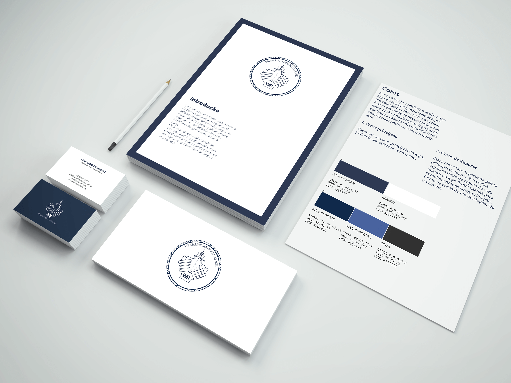
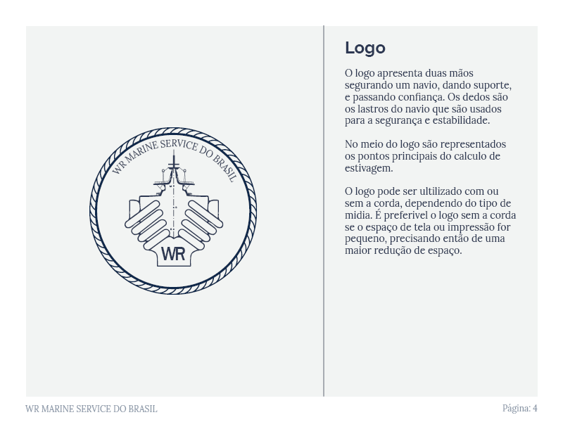

Wr Marine Service do Brasil
Empresa carioca de estivagem de cargas
Projeto da faculdade em conjunto com a empresa carioca WR Marine Service,
que atua no ramo de estivagem de cargas. Foi realizado o briefing e o cliente
pediu a criação de marca visual e de um site que se diferenciasse dos concorrentes.
Para o logo foi então realizada a vetorização do desenho
e a correção de erros em cores e traços.

Trechos do manual de Identidade Visual
Devido ao tamanho, é possível visualizar o manual de identidade no Behance
Logo


Produto final